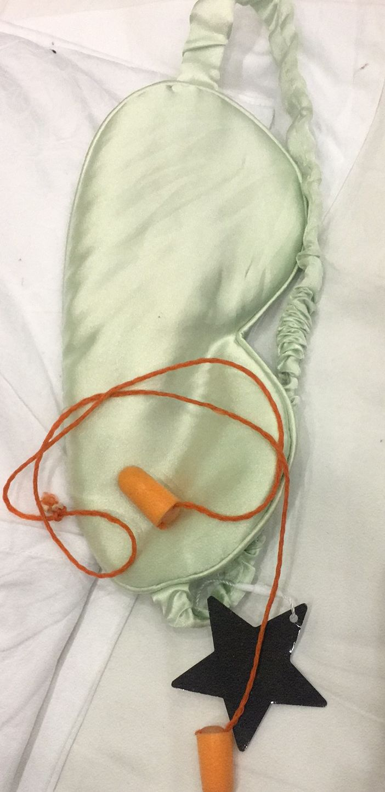
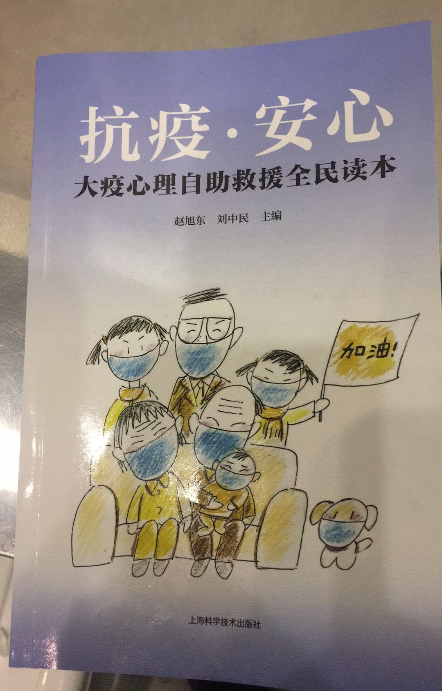

防医院内感染，是一场“苦战”——专访华山医院“医院感染管理科”主任杨帆教授
原文链接 备份链接 有时候半夜突然想到某个可能的漏洞，惊出一身冷汗。 记者 | 黄 祺 抗击新冠肺炎疫情的紧要关头，医院不能失守。 中国疾控中心2月17日的一份研究报告显示，全国已有3019名医务人员感染了新型冠状病毒，其中包括1716 …

从2月7日到现在，一方面大家的活动越来越丰富，另一方面由于轻症患者比较多，人们病情都慢慢恢复。所以，我看到每个人脸上的笑容都变多了。
口述 | 余 毅
整理 | 王仲昀
这一个月终于要过去了。
2月21日上午，在等待几天后，我做了第二次核酸检测。前几天做了第一次，检测结果是阴性。过两天第二次的结果也会出来，如果还是阴性，加上医生认定我符合标准的话，我就可以出院了。
从一月下旬开始出现症状，得不到确诊，然后回家隔离。再到后来病情加重，被确诊，接受治疗，最终来到方舱医院。过去的一个月，我都在和新冠肺炎作斗争。现在，我终于有一种“胜利”在望的感觉。
01
进到方舱医院觉得得救了
1月底，我出现了新冠肺炎的一些症状，不过始终没被确诊。由于症状比较轻，医生建议我回家隔离。一开始我在家有过好转，不过没过几天，到2月份时，病情又突然加重了。#_《口述实录 | 我就是那个“疑似”》_#
眼看在家隔离和吃药没用了，我只好再去医院寻求治疗。2月4日，我去了此前已经去过两次的同济医院光谷院区。当时我已经浑身畏寒，乏力，头很痛。这次去光谷院区，他们终于给我治疗了。没有住院，但是开始在发热门诊给我打针。

余毅的诊断报告单
两天之后，我的核酸检测结果出来了，显示是可疑阳性。我当时看到检测结果很伤心，胸很闷，呼吸比之前更困难了。我在医院连续打了四天针，到2月7日上午，我接到了东湖疾控中心的电话。他们说接到我的病情反馈信息，认定我属于阳性和阴性中间的患者，要住院治疗，我说我没床位，他们就让我跟武昌区防疫指挥中心联系，看看能否有床位。
没想到当天晚上，我就接到了电话，说可以安排我去方舱医院。于是我直接从家里出发，去了集合点，和其他患者一块被送到了现在所在的武汉客厅方舱医院。当时虽然身体还是不舒服，但跟之前的伤心比起来，我有了一种“得救了”的感觉。我在进方舱之前，已经失眠了好几天。
02
看着大家笑容逐渐变多
武汉客厅方舱医院，现在差不多有2000名患者。我注意到大部分患者和我差不多，都是那天晚上以及之后两天来的，因为我们这个方舱医院是6号才开放。
我想说一些我这段时间在方舱的观察。首先想说，医生护士们真的很辛苦，一开始他们是最忙碌的。因为大家都刚来，然后陆续不停有患者进来，一切还不像现在这样有秩序。但是，即使在前几天，医护人员依旧保持每天三次来给我们患者测体温、量血压，并且询问我们的身体状况，告诉我们有什么需要都可以跟他们说。来我们这里的，主要是福建省援鄂医疗队，然后其他地区也有一些。这些来自全国各地的医护人员，从一开始，就给我们提供了很不错的医疗条件。

武汉客厅方舱医院的留言墙
除了医疗条件，这里的饮食也不错。提供给我们的有一日三餐，每一餐的时间也比较固定，早餐是7点，午餐是11点半，晚餐是下午5点半。此外还有各种水果和牛奶，有时还有零食。每天的菜也在换，有各种肉，还有鸡腿。大家都说在这把自己吃胖了。
然后生活状况就像人们在网上看到的那样，除了不能洗澡，其他都挺好。我们进来的时候，这里给每个人发电热毯、牙刷牙膏，还有毛巾。方舱医院晚上是不熄灯的，所以还给我们发了眼罩。另外因为空调和换气设备比较多，也发了耳塞，这样睡觉就不会被吵到。大家在这里的作息都非常规律，一般晚上10点，大部分人都睡觉了，然后早上六七点起床。

方舱给每个人发放的眼罩耳塞
可能是有了这些生活和医疗上的保障，以及方舱内大多人都是轻症患者，所以在这呆了14天，我能明显感觉到自己和身边的人的变化。一开始刚来，大家普遍比较焦虑，人和人之间不太愿意交流。很多人跟我一样，刚进来的时候还要被各种人打电话询问病情，有家人，也有社区的电话。这样大家本来心情就不好，还要接电话。
我注意到刚来的时候，有些年纪大一点的阿姨，会问医护人员方舱哪里有室外活动场所。这当然是没有的，但后来我发现她们在厕所外面找到一块地方，那地方不大，但是可以晒太阳。有人在天气好的时候会去晒晒太阳，我想这个细节也反映了大家的心情。

方舱为患者准备的心理自助读本
大概从2月10日开始，就有工作人员弄来了音响。有了音响，人们就闲不住了。唱歌、跳广场舞都有了，还有护士带着我们跳一些健身操。我基本上每天都跟着跳健身操。有了这些活动，人们也就开朗起来了，大家的交流逐渐变多。我身边睡的都是三四十岁的人，大家也挺谈得来，这段时间相处下来，让人感到也是比较温暖。
从2月7日到现在，一方面大家的活动越来越丰富，另一方面由于轻症患者比较多，人们病情都慢慢恢复。所以，我看到每个人脸上的笑容都变多了。
除了我们这些患者之间的交流变多，我们和医护人员也聊得越来越多。我们发现，医护人员不仅要给我们提供各种测试，还得给我们送饭。然后有一些像我这样症状随着时间几乎消失的患者，从18日前后就自发组织起来，当起了志愿者。
其实我们能做的也只有帮他们分发患者的食物，但是他们还是一直跟我们表达感谢。我觉得在这种时候，帮助别人也让我自己更快乐，比我天天躺在床上更舒服。

轻症患者组织的志愿者招募
我已经做完了两次核酸检测，现在身体也没什么异样，我想离我从方舱出院的日子不远了。我还没想好之后的打算，因为我出去之后还得按要求去社区安排的酒店，再隔离14天。我老婆和孩子也都在隔离点。家人相见可能还有一段日子，我希望那一天能尽快到来。

征集令
《新民周刊》现面向全国征集新冠肺炎采访对象和真实故事：
如果你是参与抗击新冠肺炎疫情的医护人员或其家属，我们希望聆听你的“战疫”故事，也希望传达你的诉求。
如果你是确诊、疑似患者本人或家属，我们希望了解你和家人如何“抗疫”的过程，让外界了解你的真实经历。
如果你是疫情严重地区的普通市民，我们希望展现你的乐观，并倾听你所需的帮助。
如果你是公共服务人员或各类捐助者，我们希望看到你的“最美逆行”，记录下你的无私。
……
抗击新冠肺炎疫情，我们诚征对疫情了解的社会各界人士，提供相关线索，说出你的故事，让我们用新闻留存这一切。
《新民周刊》新冠肺炎线索征集值班编辑联系方式（添加时请简要自我介绍）：
周一：应 琛 微信号：paulineying0127
周二：金 姬 微信号：gepetta
周三：黄 祺 微信号：shewen-2020
周四：周 洁 微信号：asyouasyou
周五：孔冰欣 微信号：kbx875055141
周六：吴 雪 微信号：shyshine1105
周日：姜浩峰 微信号：jianggeladandong
✳如你需要捐赠物资，可与以下两位工作人员联系:王勇：WangYong-SH 吴轶君：rommy150708（添加时请注明“捐物资”，方便工作人员快速通过您的申请，谢谢。）
新闻是历史的底稿，你们是历史的见证者。期待你的故事、你的线索！

▼
大家还都在看这些
▼
新民周刊所有平台稿件， 未经正式授权
一律不得转载、出版、改编
或进行与新民周刊版权相关的其他行为，违者必究


原文链接 备份链接 有时候半夜突然想到某个可能的漏洞，惊出一身冷汗。 记者 | 黄 祺 抗击新冠肺炎疫情的紧要关头，医院不能失守。 中国疾控中心2月17日的一份研究报告显示，全国已有3019名医务人员感染了新型冠状病毒，其中包括1716 …
原文链接 备份链接 研究者正试图揭示新冠病毒的致病性、致死性机制，为临床治疗提供新依据，阶段结果是新冠病毒的致病特征与SARS相似，而进一步的结果或将由解剖揭开 2020年2月初，武汉金银潭医院隔离病区内，医护人员正在给新冠肺炎患者做治 …
原文链接 备份链接 疫情严峻，武汉仍在不断征集新冠肺炎床位。重压之下，各家医院肿瘤科「只出难进」，有患者被迫出院，通过网络发帖求助；也有患者试图寻求省外求医路，却被两边「入院接收单」与「通行证」夹在中间，难寻答案。 —— 同一个家庭里的新 …
原文链接 备份链接 司机停下车来思忖着说，怎么给导到这里来了？ 那是一条土路，树在旁边矗立着。春天还没到来，它的叶子还没长出来。 “前方800米左转，500米后再左转”，导航里的声音软糯着。 金银潭医院是此次行程的目的地。这是武汉市最大的 …
原文链接 备份链接 【财新网】（记者 丁捷 综合）大批从事重症医学的医护人员奔赴一线。据国家卫健委，截至2月7日，建立了16个省份支援武汉以外地市的一一对口支援关系，以一省份包一市的方式，全力支持湖北省加强病人的救治工作。驰援武汉的医护 …